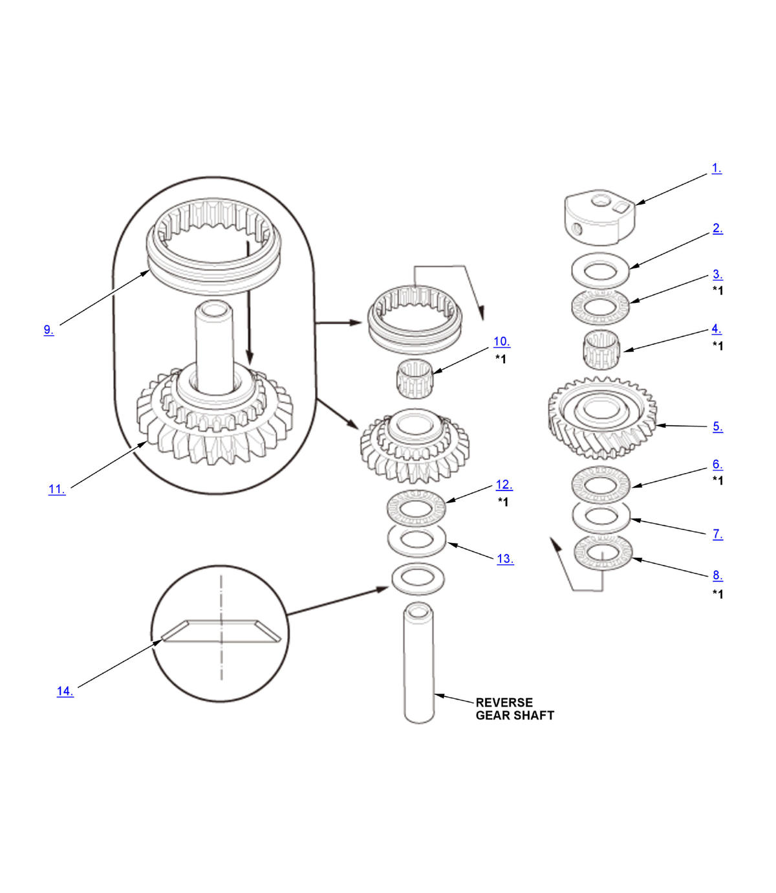

Disassembly and Reassembly: Procedure
WARNING: This page is about a different variant/trim than selected.
NOTE:
Numbered call-outs in figure pertain to list numbers in following procedure.

Courtesy of HONDA, U.S.A., INC.| *1 | Check for wear and operation |
- Reverse Gear Holder - Remove
- 20 mm Thrust Washer - Remove
- 20 mm Thrust Needle Bearing - Remove
- Needle Bearing - Remove
- Reverse Driven Gear - Remove
- 20 mm Thrust Needle Bearing - Remove
- 20 mm Thrust Washer - Remove
- 20 mm Thrust Needle Bearing - Remove
- Reverse Synchro Sleeve - Remove
- Needle Bearing - Remove
- Reverse Drive Gear - Remove
- 20 mm Thrust Needle Bearing - Remove
- 20 mm Thrust Washer - Remove
- 33 mm Spring Washer - Remove
- All Removed Parts - Install
1. Install the parts in the reverse order of removal.